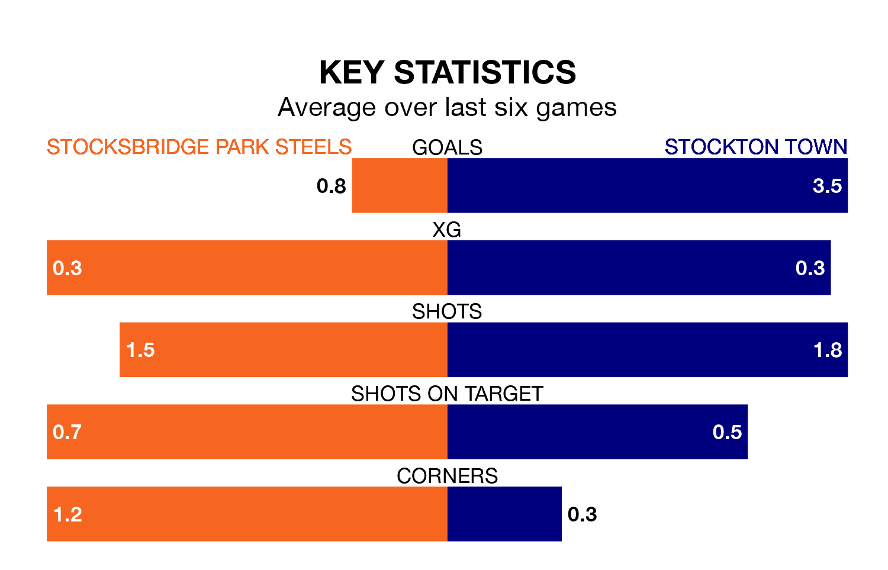

Stockton Town visit Stocksbridge Park Steels at Bracken Moor on Saturday on the back of six consecutive wins in the Northern Premier League Division One East.
It means Stockton have picked up the maximum 18 points from their last six games, and they face a Steels side who drew their last match, and have collected five points from the last possible 18.
With 42 goals in 17 games so far this season, Stockton are the league's highest scorers with 2.5 goals per game. And they are conceding fewer than average, letting in 14 goals at a rate of 0.8 per game.
Stocksbridge, meanwhile, are below average scorers, with 1.3 goals per game, compared to a league average of 1.6. They have conceded 1.5 goals per game.
Town are top of the table after 17 games, of which they have won 12 and drawn two, earning 38 points.
The Steels are 15 places behind the away team in 16th, with four wins and three draws putting them on 15 points.
Over the last two years, Stocksbridge and Stockton have played each other on three occasions. Stockton won two of them and they drew once.
Their last meeting was on August 12, when they played out a 2-2 draw.
Stocksbridge's last match was on December 15, a 2-2 draw against Liversedge.
Stockton beat Hebburn Town 3-1 last time out, on December 16.
